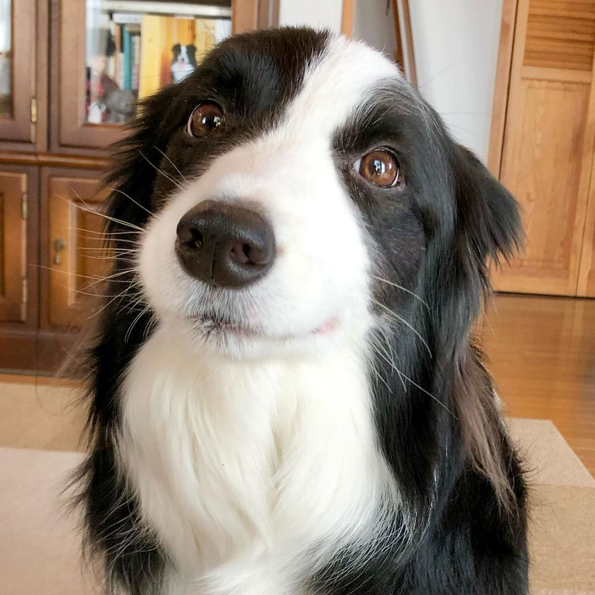
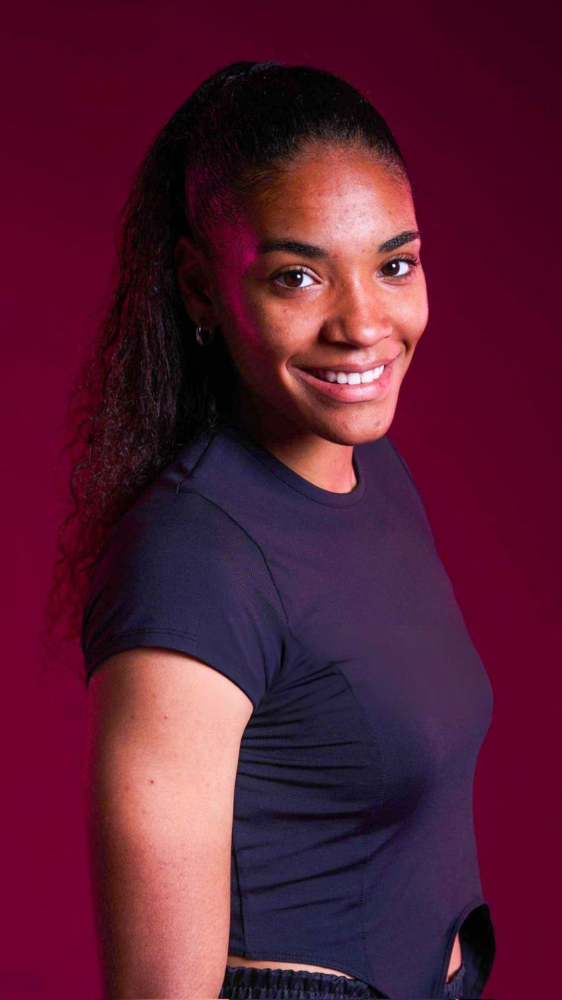

Dê um novo recomeço a quem só sabe amar
O Programa ARCA resgata, cuida e conecta animais abandonados a famílias que buscam um amor verdadeiro e transformador.


Sobre o Programa ARCA
Nascemos com o propósito firme de salvar vidas, combater o abandono e garantir a integridade física e mental de cães e gatos em situações extremas de vulnerabilidade social.
Missão
Resgatar, reabilitar e reinserir animais protegidos em lares amorosos estruturados.
Visão
Ser referência nacional em gestão humanizada e controle populacional ético de pets.
Animais Resgatados
Adoções Realizadas
Atendimentos Clínicos
Voluntários Ativos
Histórias de Transformação
"Adotar o Ribas mudou completamente a energia da nossa casa. O suporte da ARCA durante o processo foi impecável e transparente."
Diego Santos
Tutor do Ribas"O trabalho de resgate da ARCA salvou uma ninhada inteira no meu bairro. Sou parceiro e doador recorrente desse projeto sério."
Omar de Souza
Doador e Voluntário"Ver o cuidado veterinário que eles têm com cada animal debilitado nos dá a certeza de que cada centavo doado é bem investido."
